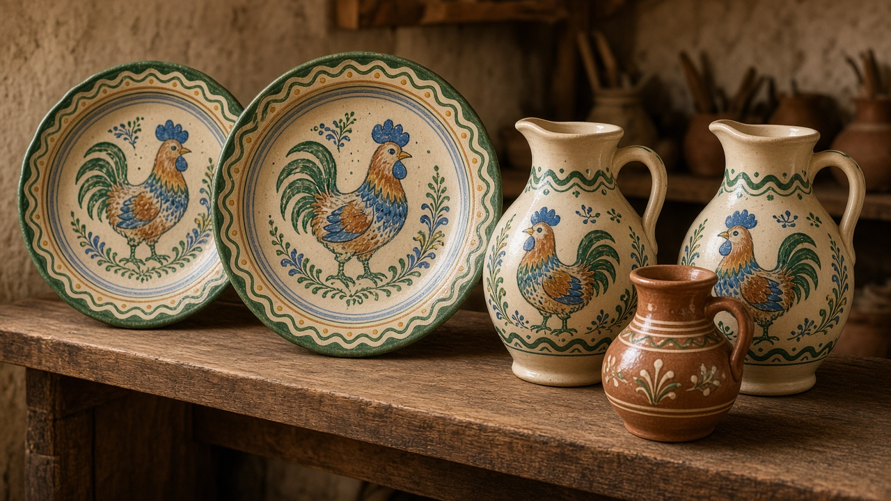

Pottery
Not gallery ceramics first. The jug, the bowl, the pot that still goes on the stove — and the Horezu workshop people name when they mean the painted one.

What people mean
When someone here says ceramică or olărie, they usually mean the kitchen. An oală for beans or sarmale. A strachină for soup. An ulcior that keeps water cooler than a bottle. The glaze may be plain brown, or a cream slip with a dark rim, or no glaze at all on an older pot. The shop plate and the museum case came later. Cloth and wood have their own map on crafts. This page is clay.
Horezu
Horezu, in the hills of Vâlcea, is the workshop town people actually mean. Families still throw there. A cream ground, a green or brown glaze, a spiral drawn with a horn of slip, and the rooster — cocoșul — that became a signature without turning into a logo. You can buy a plate too pretty for beans and a jug that is not. The town is not a closed museum. Kilns still fire. The crafts page already named that look in one sentence. This is the place that sentence was pointing at.
By the stove
In the house the useful pieces live near heat. A pot against the sobă, a jug on the porch in summer, a stack of bowls that do not match. Some yards still keep an older unglazed pot for pickling or for milk. Town kitchens use enamel and glass; a clay pot still appears when someone wants beans that taste like Sunday. The room that holds that stove is on the house. The road those yards share is on villages.
Sold, given, replaced
A painted Horezu plate is a gift. A plain jug is a purchase you do not photograph. Both turn up at the market — next to cheese and a pile of coats — and both break. You replace them. Easter eggs are a different craft: wax on a shell, not clay; that week is on Paște, and the handwork around it stays on crafts. This page is only the pot that gets used until it doesn't.